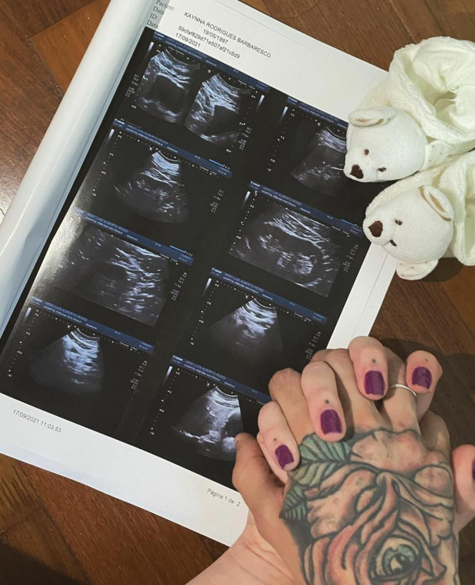

A seguir confira algumas Curiosidades do MC Hariel.
Hariel e sua namorada Kaynna Barbaresco estão a espera do Jorge, que nascera em Abril de 2022.

Juntamente com sua gata, hariel tem duas pitbuul katrina e pandora, tendo também, um lago com diversas especies de peixe.
Um dos seus hobis é cozinhar para familia.
Hariel fez uma musica em homenagem ao seu Corinthians, com a participação de MC Kevin e MC Davi. Sendo um dos seus maior hit, com mais de 53 milhões de visualizações,
A familia de Hariel é composta por sua mãe, e seus quatro irmãos, dois homens e duas mulheres.
O MC já participou de diversos Podcast, sendo um deles o "Podpah", com mais de dois milhões de visualizações.